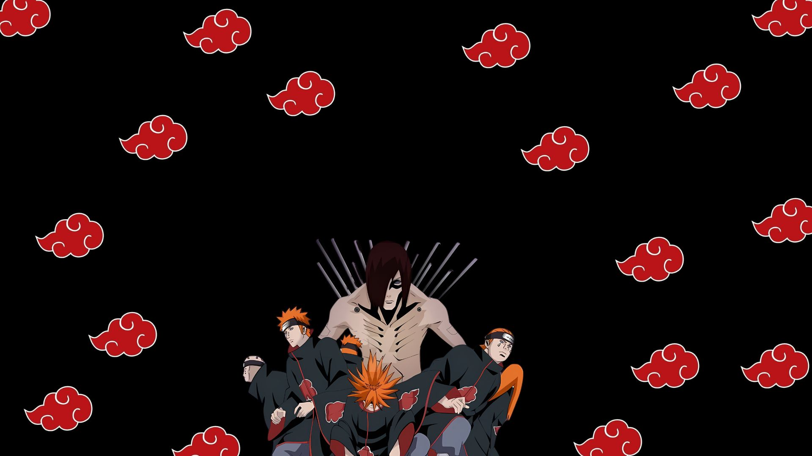
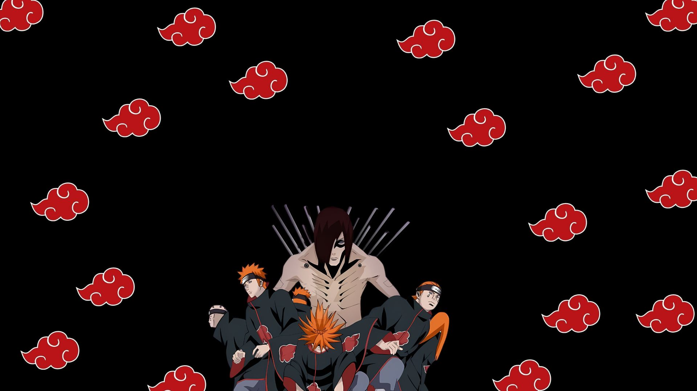
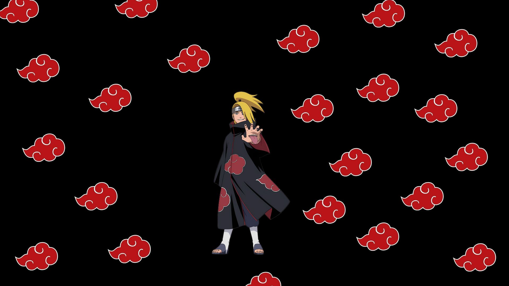
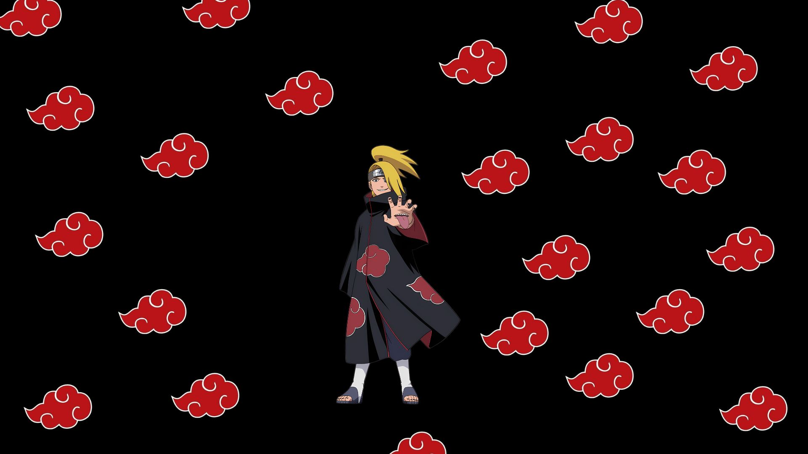
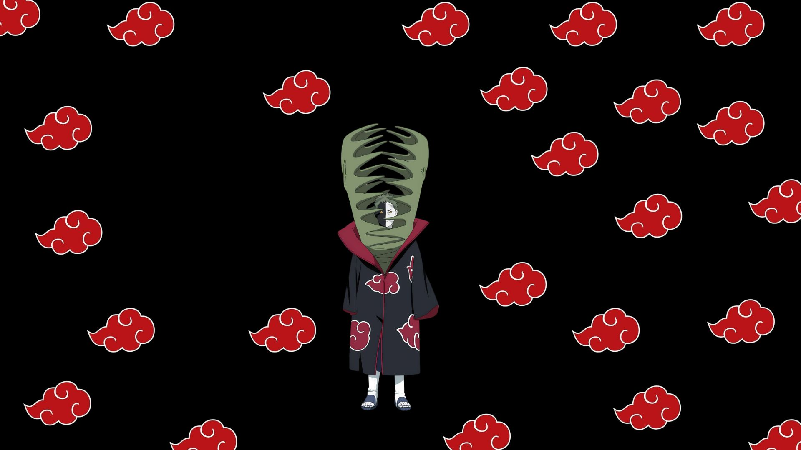
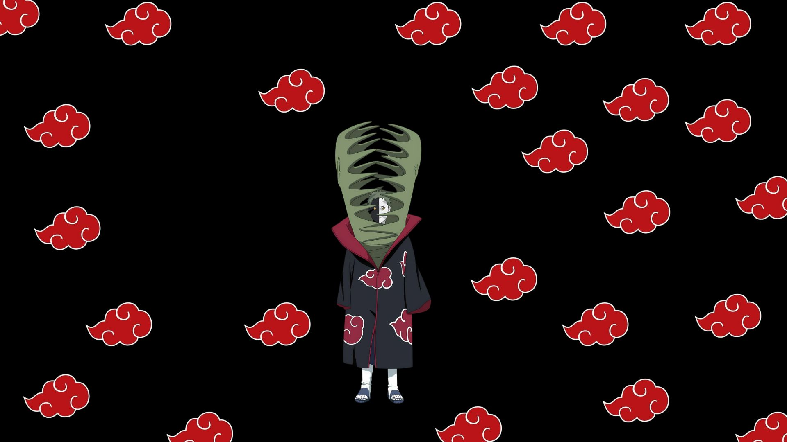

 


 


Akatsuki
A Akatsuki é uma organização icônica e temida do universo Naruto, originalmente criada para trazer paz ao mundo shinobi. Fundada por Yahiko, Nagato e Konan durante a Terceira Guerra Mundial Shinobi, eles eram órfãos de Amegakure que desejavam um mundo sem sofrimento. Sob Yahiko, a Akatsuki se destacou por ações pacifistas, mas após sua morte, Nagato, como Pain, mudou o foco para a coleta das Bijuu, visando impor a paz mundial através do medo. Os membros são reconhecidos por seus mantos negros com nuvens vermelhas, simbolizando a chuva de sangue sobre o mundo shinobi, além de usarem anéis únicos e unhas pintadas de preto.
Pain/Nagato
Pain, também conhecido como Nagato Uzumaki, é um shinobi de Amegakure e um dos fundadores da Akatsuki. Após perder seus pais na Segunda Grande Guerra Shinobi, desenvolveu um forte desejo por paz. Junto com Yahiko e Konan, formou a Akatsuki, inicialmente dedicada a trazer harmonia ao mundo shinobi. Após a morte de Yahiko, Nagato adotou o nome Pain e tornou-se líder da organização, acreditando que a verdadeira paz poderia ser alcançada por meio da dor e do medo. Com o Rinnegan, um dos doujutsus mais poderosos, que recebeu de Madara Uchiha na infância, ele controla seis corpos conhecidos como Os Seis Caminhos de Pain, cada um com habilidades únicas. Nagato possui uma ampla gama de poderes devido ao Rinnegan, incluindo controle da gravidade, absorção de ninjutsu, invocação de criaturas poderosas e controle sobre almas, além de ser proficiente em todos os cinco tipos de chakra elementais.
Konan
Konan nasceu em Amegakure, a Vila Oculta da Chuva, e perdeu seus pais durante a Segunda Grande Guerra Ninja. Ela foi encontrada por Yahiko, e junto com Nagato, formaram um grupo de órfãos que lutavam para sobreviver. Konan foi uma das fundadoras da Akatsuki, uma organização que inicialmente buscava a paz. Após a morte de Yahiko, tornou-se parceira de Nagato (Pain) e o apoiou na liderança da Akatsuki. Konan é famosa por seu ninjutsu de papel, que lhe permite transformar seu corpo e criar armas a partir de papel. Entre suas técnicas estão a Dança do Shikigami, onde se desfaz em milhares de folhas de papel, e o Clone de Papel, que cria cópias dela mesma. Após a morte de Nagato, ela desertou da Akatsuki e se tornou a líder de Amegakure, buscando continuar o legado de paz que tanto desejavam.
Itachi Uchiha
Itachi era um prodígio do clã Uchiha, de Konohagakure, a Vila Oculta da Folha. Ele se formou na academia ninja aos 7 anos e se tornou Chunnin aos 10. Com apenas 13 anos, já era capitão da Anbu, a força especial de elite de Konoha. Itachi é mais conhecido por ter assassinado todo o seu clã, poupando apenas a vida de seu irmão mais novo, Sasuke. Esse ato o transformou em um criminoso internacional e membro da Akatsuki. Como membro da Akatsuki, Itachi trabalhou ao lado de Kisame Hoshigaki. Itachi possuía o Sharingan e o Mangekyō Sharingan, doujutsus que lhe conferiam habilidades poderosas como o Tsukuyomi, o Amaterasu e o Susanoo. Além disso, ele era mestre em ninjutsu, taijutsu e genjutsu, tornando-se um dos ninjas mais formidáveis de sua época.
Kisame Hoshigaki
Kisame Hoshigaki, conhecido como o "monstro da Névoa Oculta", é um ninja renegado de Kirigakure( Vila Oculta da Névoa) e um dos sete espadachins da névoa. Ele se destacou pela brutalidade e habilidade em combate. Antes de se unir à Akatsuki, Kisame eliminou seus próprios companheiros para proteger informações cruciais de seu clã. Na Akatsuki, foi parceiro de Itachi Uchiha, a quem respeitava profundamente. Com uma quantidade de chakra comparável à de uma Bijuu, Kisame era um adversário formidável. Mestre em técnicas do Estilo Água, conseguia criar água mesmo em locais secos. Sua espada, Samehada, absorvia chakra e se fundia com ele, aumentando ainda mais seu poder em batalha. Essa combinação fez dele um dos membros mais temidos da Akatsuki.
Deidara
Deidara, nascido em Iwagakure, a Vila Oculta da Pedra, era membro do esquadrão de explosões e possuía o Kekkei Genkai de liberação de explosão, permitindo-lhe criar explosões poderosas com argila especial. Após roubar um kinjutsu que infundia chakra em substâncias, deixou sua vila e foi recrutado por Itachi Uchiha, Kisame Hoshigaki e Sasori. Inicialmente parceiro de Sasori e depois de Tobi, Deidara era um dos membros mais jovens da Akatsuki e via suas explosões como a forma mais elevada de arte. Ele moldava argila explosiva em várias formas, como pássaros e dragões, que podiam voar e explodir sob comando. Com bocas nas palmas das mãos e no peito para moldar a argila, suas técnicas mais poderosas incluíam o C3, uma bomba massiva capaz de destruir uma vila inteira, e o C4, que liberava micro-bombas desintegrando inimigos a nível celular.
Sasori
Sasori, conhecido como Sasori da Areia Vermelha, nasceu em Sunagakure, a Vila Oculta da Areia. Ele perdeu seus pais ainda jovem, ficando sob os cuidados de sua avó, Chiyo. Para aliviar sua tristeza, ela o ensinou a arte das marionetes. Sasori rapidamente se destacou, criando marionetes incrivelmente realistas, incluindo réplicas de seus próprios pais.Ele se juntou à Akatsuki e inicialmente fez parceria com Orochimaru. Após a saída deste, tornou-se parceiro de Deidara. Sasori era um mestre das marionetes, capaz de controlar várias simultaneamente. Ele transformou seu próprio corpo em uma marionete, adquirindo habilidades únicas e longevidade aumentada. Suas marionetes mais notáveis incluíam Hiruko, que usava como armadura, e o Terceiro Kazekage, que ele transformou em uma marionete humana.
Hidan
Hidan nasceu em Yugakure, a Vila Oculta das Fontes Termais, e ficou frustrado com a transformação de sua vila em um destino turístico, acreditando que os shinobi deveriam ser guerreiros. Ele se juntou ao culto de Jashin, que prega a destruição, e foi recrutado pela Akatsuki, formando uma dupla eficaz com Kakuzu, conhecida como Dueto Zumbi. A habilidade mais notável de Hidan é sua imortalidade, adquirida por meio dos rituais de Jashin. Ele pode sobreviver a ferimentos graves e usa sua foice de três lâminas para coletar o sangue de seus oponentes, realizando um ritual que liga seu corpo ao deles. Assim, qualquer dano que ele inflige a si mesmo é transferido para a vítima, permitindo-lhe matar de forma dolorosa e ritualística.
Kakuzu
Kakuzu nasceu em Takigakure, a Vila Oculta da Cachoeira; e foi um ninja de elite encarregado de assassinar Hashirama Senju, mas falhou e foi punido severamente. Em retaliação, matou os anciãos da vila, roubou seus corações e fugiu com técnicas proibidas. Na Akatsuki, fez parceria com Hidan e atuou como tesoureiro, sempre em busca de recompensas. Kakuzu possuía a técnica Jiongu, que lhe permitia costurar partes de corpos e prolongar sua vida ao roubar corações, podendo usar até cinco corações representando os elementos Terra, Água, Fogo, Vento e Raio, permitindo o uso de diversos jutsus elementares.
Zetsu
Zetsu é um membro da Akatsuki composto por duas entidades: Zetsu Branco e Zetsu Negro. O Zetsu Branco, criado a partir das células de Hashirama Senju, é brincalhão e pode se fundir com o ambiente, tornando-se invisível e criando clones, usados em grande número na Quarta Grande Guerra Mundial Shinobi. Já o Zetsu Negro é sério e sombrio, originado da vontade de Kaguya Otsutsuki. Ele atuou como espião e informante da Akatsuki, coletando informações e ajudando na execução do Plano Olho da Lua de Madara Uchiha.
Tobi
Tobi, também conhecido como Obito Uchiha, foi um ninja de Konohagakure e membro do time Minato, junto com Kakashi e Rin. Ele foi dado como morto na Terceira Guerra Mundial Shinobi, mas foi resgatado por Madara Uchiha. Após testemunhar a morte de Rin, Obito adotou a identidade de Tobi e passou a trabalhar no Plano Olho da Lua, que visava criar um mundo sem sofrimento. Tobi aparece como parceiro de Deidara após a morte de Sasori, usando uma máscara laranja com um padrão espiral que cobre seu rosto. Entre suas habilidades estão o Kamui, que lhe permite teletransportar partes do corpo para outra dimensão; manipulação de Zetsu, que possibilita regeneração e criação de extensões do corpo; e controle sobre bestas com cauda, utilizando Sharingan e Rinnegan.